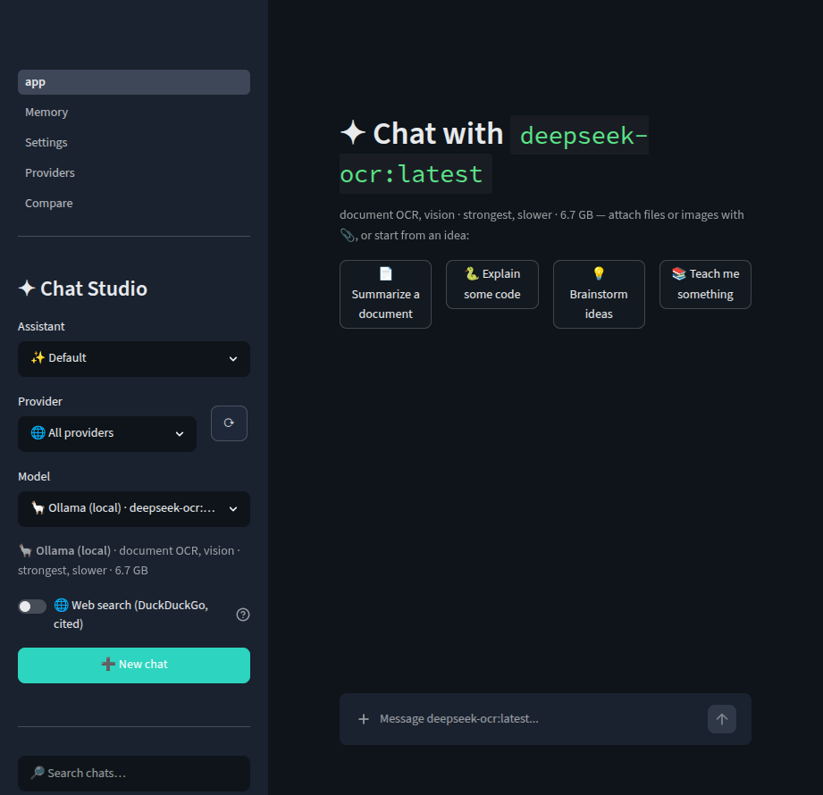
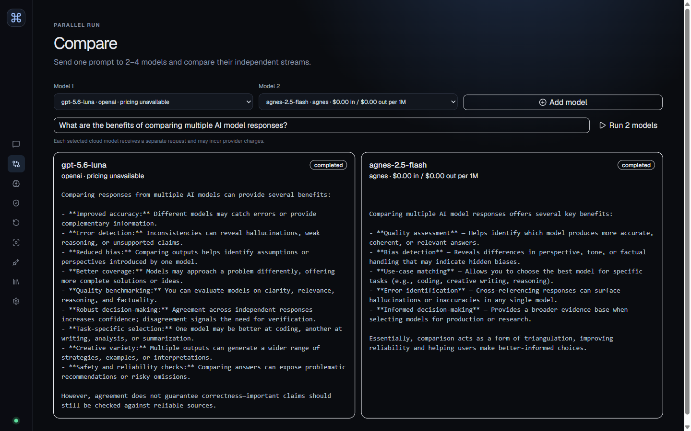

FastAPI + React
The API persists conversations, discovers providers, and streams runs. The React workspace is a polished shell not yet wired to those contracts.
SYSTEMS FIELD MANUAL · VERIFIED 2026-07-23
A zero-to-contributor guide to two applications sharing one repository.
CHAPTER 01 · SITUATION REPORT
The safest mental model: two applications in one repository during a parity migration—not one UI with two equivalent implementations.
The legacy Streamlit path is currently the complete local end-user app. V2 is not yet end to end, and neither stack is production deployment-ready as shipped because authentication and hardened network controls are absent.
The API persists conversations, discovers providers, and streams runs. The React workspace is a polished shell not yet wired to those contracts.
The mature path contains chat, files, RAG, memory, assistants, personalization, and comparison in a separate runtime and store.

CHAPTER 02 · THEORY KIT
An LLM predicts the next token. Instructions, history, retrieved documents, and output share a finite context budget. Temperature changes sampling variability, not truth; v2 accepts 0–2 and defaults to 0.7.
Embeddings map meaning to vectors. Similar direction suggests semantic similarity. Legacy Chroma distance becomes similarity = 1 - distance.
cosine(a,b) = (a · b) / (||a|| ||b||)RAG indexes source chunks, retrieves relevant evidence, and adds bounded results to a request. It neither trains the model nor guarantees correctness.
REST models HTTP resources. SSE is a one-way server-to-browser event stream. PKCE binds an authorization code to a one-time verifier.
SQLite survives restart; v2 runs and credentials do not. Locks protect critical sections, not workflows across multiple processes.
CHAPTER 03 · CAPABILITY LEDGER
| Capability | Status | Operational truth |
|---|---|---|
| Conversations/messages | v2 | Working REST routes backed by data/v2/studio.db. |
| Providers and streaming | v2 | Seven adapters, concurrent discovery, in-memory runs, cancellation, replayable SSE. |
| React workspace | v2 gap | Navigation and demos exist; conversations and runs are not connected. |
| Files, RAG, memory | legacy | Implemented in Streamlit and src/; absent from v2 contracts. |
| Assistants/comparison | legacy | Implemented in legacy; v2 screens are placeholders. |
| Shared persistence | gap | Different schemas and locations; no migration or synchronization. |
| Durable v2 runs | gap | A runs table exists, but RunManager uses memory only. |
| Authentication | gap | The session cookie scopes keys; it does not authenticate users. |
CHAPTER 04 · BRING-UP PROCEDURE
Prerequisites: Python 3.12+, uv, Node/npm, and Ollama. Pull embeddinggemma for legacy memory and RAG.
git clone https://github.com/pypi-ahmad/local-ai-chat-studio.git
Set-Location local-ai-chat-studio
uv sync --locked --dev
Set-Location frontend
npm ci
npm run build
Set-Location ..
uv run chat-studio
# Legacy app (run separately)
ollama pull embeddinggemma
uv run streamlit run app.pygit clone https://github.com/pypi-ahmad/local-ai-chat-studio.git
cd local-ai-chat-studio
uv sync --locked --dev
cd frontend
npm ci
npm run build
cd ..
uv run chat-studio
# Legacy app (run separately)
ollama pull embeddinggemma
uv run streamlit run app.pyCHAPTER 05 · TERRAIN MAP
backend/app/ [v2] routes · contracts · store · providers · runs
frontend/src/ [v2] React shell · typed API layer
scripts/ [shared] OpenAPI → TypeScript generator
tests/ [v2] API and provider contracts
app.py + pages/ [legacy] Streamlit entry and feature screens
src/ [legacy] jobs · RAG · memory · persistence
data/ runtime data; ignored, not sourceRoute: contracts.py → store.py → sessions.py → providers.py → runs.py → main.py → frontend/src/api → App.tsx; then app.py → jobs.py → orchestrator.py.
CHAPTER 06 · SIGNATURE INSTRUMENT
Switch tracks to reveal the responsible files, concepts, and parity break.
POST /api/v1/runs
React integration is still a gap.main.py and contracts.py
Cookie scopes credential lookup.runs.py creates async task
Process memory only.providers.py yields deltas
Session key beats env fallback.started → delta* → terminal
Existing events replay first.GET /runs/{id}
Gap: not persisted to conversation.CHAPTER 07 · V2 BACKEND
main.pyComposition root and HTTP routes. API registration precedes the optional static mount.
contracts.pyPydantic request, response, status, and event types. Never hand-edit generated frontend schemas.
store.pySQLite conversations/messages ordered under a lock and transaction. The runs table is unused.
sessions.pySession-memory credentials with environment fallback; no expiry or cleanup.
providers.pyNormalized adapters and isolated concurrent discovery. Gemini flattens normalized messages.
runs.pyQueued/running/terminal lifecycle, replayable events, and cooperative cancellation between chunks.
queued → running → completed
↘ cancelled
↘ failedCHAPTER 08 · REACT RECONNAISSANCE
App.tsx renders sample history, composer, provider cards, and placeholders. The client only provides createRun, cancelRun, and providers.
Best first slice: wire provider status with loading, success, and error states. Full chat requires an explicit orchestration owner.
CHAPTER 09 · LEGACY ENGINE

app.py persists the user turn, starts a background job, and polls output. jobs.py parses files, retrieves context, streams a provider, persists the answer, then performs best-effort indexing and enrichment.
Small documents enter context directly; large documents are chunked into Chroma. Memory stores atomic facts; personalization stores a synthesized profile.
CHAPTER 10 · SECURITY PERIMETER
v2 conversations in data/v2/studio.db; richer legacy state and vectors under data/.
v2 runs, events, entered keys, and PKCE verifiers vanish on restart.
Messages and chosen context sent to a cloud provider.
The cookie scopes secrets; it is not identity, encryption, or authorization.
CHAPTER 11 · EXTENSION LABS
schema.ts.api.providers().key_source values.CHAPTER 12 · VERIFICATION
uv run python -m pytest -q
uv run ruff check backend tests
Set-Location frontend
npm run lint
npm test
npm run build| Symptom | First checks |
|---|---|
/ is 404 | Build frontend/dist; confirm startup directory. |
| Run stays queued | Inspect snapshot/events and provider traceback. |
| Cancel is delayed | Cancellation is checked between chunks. |
| Key disappears | Restart/new cookie loses memory-only keys. |
| RAG returns nothing | Check embedding model, parsing, Chroma, scope, similarity. |
Reproduce → localize → one hypothesis → one changed variable → verify.
CHAPTER 13 · MODULE ATLAS
backend/app/main.pyv2HTTP, middleware, PKCE
backend/app/runs.pyv2Streaming lifecycle
frontend/src/App.tsxgapMostly static shell
scripts/generate_api_types.pysharedOpenAPI conversion
app.pylegacyStreamlit shell
src/jobs.pylegacyGeneration pipeline
src/rag.pylegacyChroma retrieval
src/chat_store.pylegacyRich domain store
CHAPTER 14 · QUALIFICATION DRILLS
No. The shell is v2, behavior is legacy, and porting remains a gap.
SQLite conversations/messages; not runs, events, session keys, or PKCE verifiers.
Each has a separate in-memory vault and run registry; a cookie does not ensure affinity.
v2 uses async tasks and SSE. Legacy uses daemon threads and Streamlit polling.
CHAPTER 15 · PRIMARY REFERENCES
No chapters match. Try a module, concept, or status.